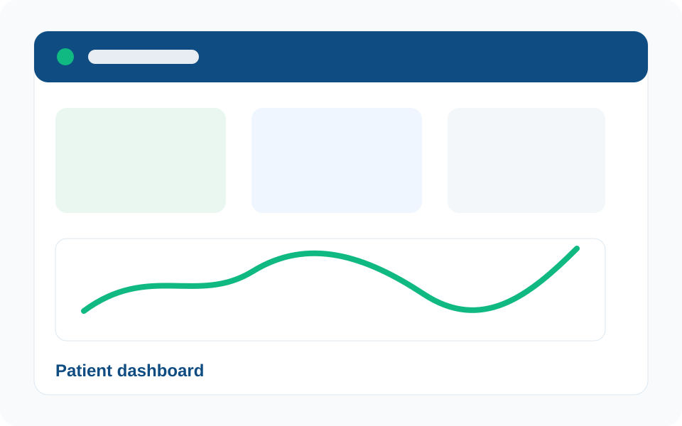
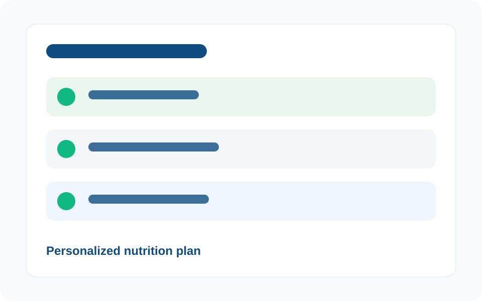
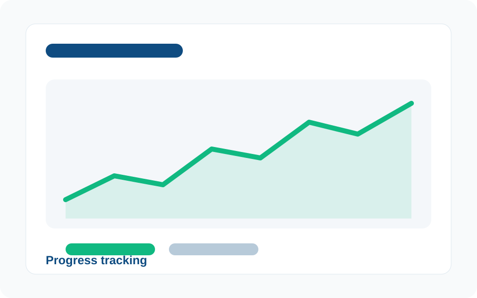
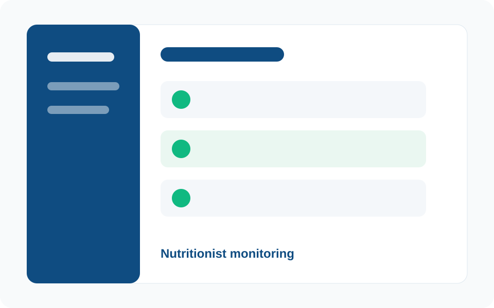
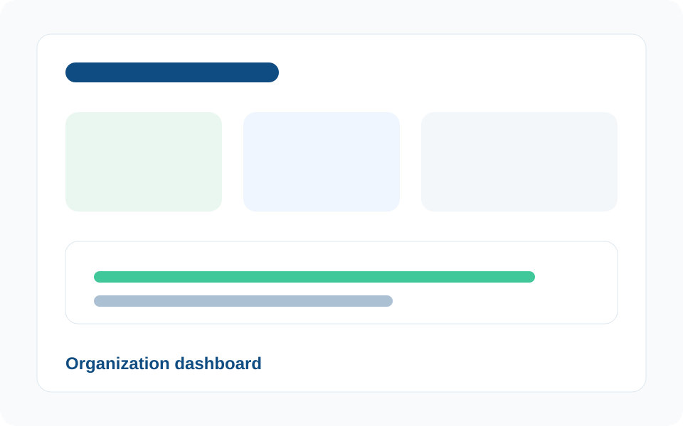

Patient dashboard
A personal view for plan status, daily actions and progress summaries.
BioTrack connects patients, nutritionists and organizations in one digital platform for personalized plans, nutrition follow-up, and progress tracking.
Patients often lose consistency when follow-up is manual or disconnected. Nutritionists and organizations need clearer ways to monitor progress.
Trusted by leading organizations
 Clínica San Pablo
Clínica San Pablo
 Rimac Seguros
Rimac Seguros
 Universidad UPC
Universidad UPC
 Grupo Falabella
Grupo Falabella
BioTrack brings personalized plans, progress tracking, and organization views into one digital platform.
A nutritionist can create a plan based on the patient's health profile, goals, and dietary restrictions.
Patients can log meals, physical activity, and weight so progress is easier to review.
Organizations can review aggregated follow-up information while keeping each patient's data private.
Nutritionists can review patients, assessments, and personalized plans from one panel.
Charts and PDF reports help review changes and progress during follow-up.
Reminders help patients keep logging, and alerts can flag low adherence for follow-up.
Watch how BioTrack presents its business model, main features, segment benefits, web application experience and validation feedback for patients, nutrition professionals and organizations.
BioTrack includes web views designed to help users follow nutrition plans, review progress and manage key actions from one platform.

A personal view for plan status, daily actions and progress summaries.

A structured plan view for meals, recommendations and follow-up details.

Charts and summaries that help users understand changes over time.

A workspace for reviewing patients, follow-up notes and plan activity.

An aggregated view for organizations to review follow-up activity clearly.
For people who need a personalized plan, simple logging, and clear progress tracking.
For organizations that need a clear way to support nutrition follow-up for their teams.
For nutritionists who need one place to review patients, plans, and follow-up notes.
Sign up and choose your account type: patient, organization, or nutritionist.
Add basic health information, your nutrition goal, and your dietary restrictions.
A nutritionist reviews your profile and creates a plan. Then you can review it and use it for follow-up.
Log meals and activity, review charts, receive reminders, and generate reports when you need them.
Each plan is meant for a different level of nutrition follow-up.
For patients starting with basic nutrition follow-up.
For patients who need more follow-up and reminders.
For organizations that need follow-up tools for teams.
"During validation, BioTrack felt useful for keeping a nutrition plan organized and easier to review between appointments."
"The organization view was clear for understanding follow-up needs while keeping individual information separate."
"The flow felt simple for reviewing patient progress and seeing what should be discussed in the next follow-up."
The NexTech team presents the project and its vision.
Use BioTrack to connect personalized plans, progress tracking, and support for each segment.
If you are an organization, a nutritionist, or just have a question, write to us directly. This form opens an email draft addressed to our team.
Complete the form and review the email draft before sending it from your email app.